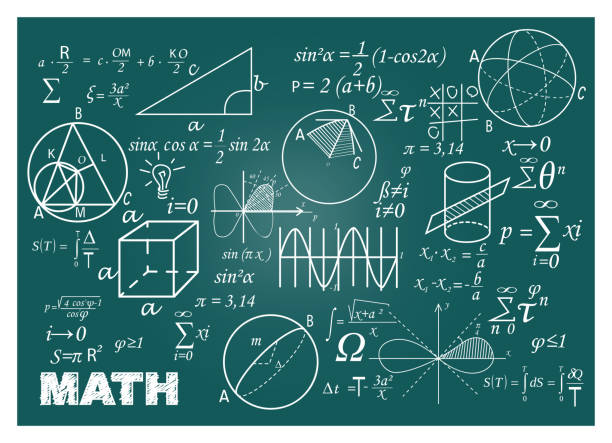
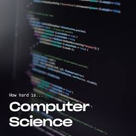

Classes

MathMathematics provides an effective way of building mental discipline and encourages logical reasoning and mental rigor. In addition, mathematical knowledge plays a crucial role in understanding the contents of other school subjects such as science, social studies, and even music and art. |
HistoryHistory of Education is of fundamental importance to a professional teacher. ... When you study the past, you are able to understand the process of education and how it evolved up to the present. In this way, the present not only becomes clear but also helps to illuminate the future. |

EconomicsEconomics plays a role in our everyday life. Studying economics enables us to understand past, future and current models, and apply them to societies, governments, businesses and individuals. |

Computer ScienceComputer science (CS) is an important element in strengthening existing education models and preparing students for the future. ... A recent randomized control trial also showed that lessons in computational thinking improved student response inhibition, planning, and coding skills |
Foreign LanguageThe study of foreign languages teaches and encourages respect for other peoples: it fosters an understanding of the interrelation of language and human nature. Foreign languages expand one's view of the world, liberalize one's experiences, and make one more flexible and tolerant. |
MusicMusic education requires students to recognize and repeat pitch, tone or enunciation of words. Especially in young children, music directly benefits the ability to learn words, speak them correctly, and process the many new sounds they hear from others. Music education involves a high level of memorization |
Subject - Class List
| Number | Class Name | Instructor | Meets |
|---|---|---|---|
| 1 | Math 101 | Mr. Smith | Mon & Tues : 8:00-10:00 |
| 1 | Math 102 | Mr. Smith | Wed & Thurs : 9:00-11:00 |
| 1 | Math 103 | Mr. Smith | Fri & Sat : 8:30-10:30 |
| 2 | History 101 | Mr. Smith | Mon & Tues : 12:00-2:00 |
| 2 | History 102 | Mr. Smith | Wed & Thurs : 12:00-2:00 |
| 2 | History 103 | Mr. Smith | Fri & Sat : 11:30-1:30 |
| 3 | Economics 101 | Mr. Bean | Mon & Tues : 12:00-2:00 |
| 3 | Economics 102 | Mr. Bean | Wed & Thurs : 8:00-10:00 |
| 3 | Economics 103 | Mr. Bean | Fri & Sat : 8:00-10:00 |
| 4 | Computer Science 101 | Mr. Bean | Mon & Tues : 9:00-11:00 |
| 4 | Computer Science 102 | Mr. Bean | Wed & Thurs : 11:00-1:00 |
| 4 | Computer Science 103 | Mr. Bean | Fri & Sat : 1:00-2:00 |
| 5 | Foreign Language 101 | Mr. Johnson | Mon & Tues : 8:00-12:00 |
| 5 | Foreign Language 102 | Mr. Johnson | Wed & Thurs : 8:00-12:00 |
| 5 | Foreign Language 103 | Mr. Johnson | Fri & Sat : 8:00-12:00 |
| 6 | Music 101 | Mr. Johnson | Wed-Fri : 1:00-3:00 |
| 6 | Music 102 | Mr. Johnson | Wed & Thurs : 1:00-3:00 |
| 6 | Music 103 | Mr. Johnson | Fri & Sat : 1:00-3:00 |